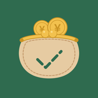

KOZUKAI
おこづかいの確認のお願いです
家族から、KOZUKAIでおこづかいの「確認する人」に招待されています。下のボタンから参加できます（KOZUKAIは無料で使えます）。
KOZUKAIをお持ちの方
KOZUKAIで参加するアプリが開かないときは、App StoreでKOZUKAIを最新版にアップデートしてから、もう一度押してください。
まだお持ちでない方
インストールする（無料）招待リンクをコピーしてから、App Storeを開きます。インストールしたKOZUKAIを開くと「招待を受け取りましたか？」と表示されるので、［ペースト］を押すと参加できます。
うまくいかないとき
- LINEなどのアプリの中で開いている場合は、画面のメニューから「ブラウザで開く」を選んで、もう一度お試しください。
- または、下の招待リンクをコピーしてから、KOZUKAIの「設定」→「コピーした招待リンクを開く」を押してください。